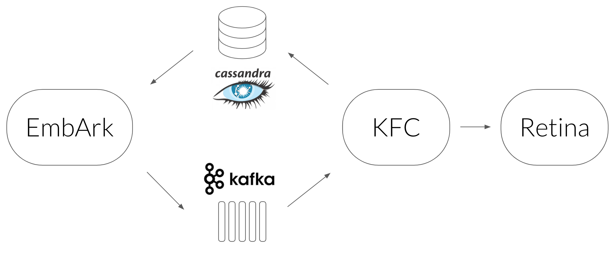

So you just finished designing that great neural network architecture of yours. It has a blazing number of 300 fully connected layers interleaved with 200 convolutional layers with 20 channels each, where the result is fed as the seed of a glorious bidirectional stacked LSTM with a pinch of attention. After training you get an accuracy of 99.99%, and you’re ready to ship it to production.
But then you realize the production constraints won’t allow you to run inference using this beast. You need the inference to be done in under 200 milliseconds.
In other words, you need to chop off half of the layers, give up on using convolutions, and let’s not get started about the costly LSTM...
If only you could make that amazing model faster!
Sometimes you can
Here at Taboola we did it. Well, not exactly... Let me explain.
One of our models has to predict CTR (Click Through Rate) of an item, or in other words — the probability the user will like an article recommendation and click on it.
The model has multiple modalities as input, each goes through a different transformation. Some of them are:
- categorical features: these are embedded into a dense representation
- image: the pixels are passed through convolutional and fully connected layers
- text: after being tokenized, the text is passed through a LSTM which is followed by self attention
These processed modalities are then passed through fully connected layers in order to learn the interactions between the modalities, and finally, they are passed through a MDN layer.
As you can imagine, this model is slow.
We decided to insist on the predictive power of the model, instead of trimming components, and came up with an engineering solution.
Cache me if you can
Let’s focus on the image component. The output of this component is a learned representation of the image. In other words, given an image, the image component outputs an embedding.
The model is deterministic, so given the same image will result with the same embedding. This is costly, so we can cache it. Let me elaborate on how we implemented it.
The architecture (of the cache, not the model)

- We used a Cassandra database as the cache which maps an image URL to its embedding.
- The service which queries Cassandra is called EmbArk (Embedding Archive, misspelled of course). It’s a gRPC server which gets an image URL from a client and retrieves the embedding from Cassandra. On cache miss EmbArk sends an async request to embed that image. Why async? Because we need EmbArk to respond with the result as fast as it can. Given it can’t wait for the image to be embedded, it returns a special OOV (Out Of Vocabulary) embedding.
- The async mechanism we chose to use is Kafka — a streaming platform used as a message queue.
- The next link is KFC (Kafka Frontend Client) — a Kafka consumer we implemented to pass messages synchronously to the embedding service, and save the resulting embeddings in Cassandra.
- The embedding service is called Retina. It gets an image URL from KFC, downloads it, preprocesses it, and evaluates the convolutional layers to get the final embedding.
- The load balancing of all the components is done using Linkerd.
- EmbArk, KFC, Retina and Linkerd run inside Docker, and they are orchestrated by Nomad. This allows us to easily scale each component as we see fit.
This architecture was initially used for images. After proving its worth, we decided to use it for other components as well, such as text.
EmbArk proved to be a nice solution for transfer learning too. Let’s say we believe the content of the image has a good signal for predicting CTR. Thus, a model trained for classifying the object in an image such as Inception would be valuable for our needs. We can load Inception into Retina, tell the model we intend to train that we want to use Inception embedding, and that’s it.
Not only that the inference time was improved, but also the training process. This is possible only when we don’t want to train end to end, since gradients can’t backpropagate through EmbArk.
So whenever you use a model in production you should use EmbArk, right? Well, not always...
Caveats
There are three pretty strict assumptions here.
1. OOV embedding for new inputs is not a big deal
It doesn’t hurt us that the first time we see an image we won’t have its embedding.
In our production system it’s ok, since CTR is evaluated multiple times for the same item during a short period of time. We create lists of items we want to recommend every few minutes, so even if an item won’t make it into the list because of non optimal CTR prediction, it will in the next cycle.
2. The rate of new inputs is low
It’s true that in Taboola we get lots of new items all the time. But relative to the number of inferences we need to perform for already known items are not that much.
3. Embeddings don’t change frequently
Since the embeddings are cached, we count on the fact they don’t change over time. If they do, we’ll need to perform cache invalidation, and recalculate the embeddings using Retina. If this would happen a lot we would lose the advantage of the architecture. For cases such as inception or language modeling, this assumption holds, since semantics don’t change significantly over time.
Some final thoughts
Sometimes using state of the art models can be problematic due to their computational demands. By caching intermediate results (embeddings) we were able to overcome this challenge, and still enjoy state of the art results.
This solution isn’t right for everyone, but if the three aforementioned assumptions hold for your application, you could consider using a similar architecture.
By using a microservices paradigm, other teams in the company were able to use EmbArk for needs other than CTR prediction. One team for instance used EmbArk to get image and text embeddings for detecting duplicates across different items. But I’ll leave that story for another post...
Originally published by me at engineering.taboola.com.
Comments !